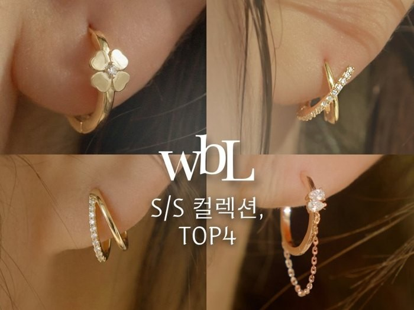

CRM · 2025.01 – 2026.06
카카오 친구톡 타깃 재설계
전체 대상에게 같은 메시지를 발송하던 친구톡에서, 구매 관심도가 높은 고객에게 메시지를 보낼 기준이 필요했습니다.
친구톡 ROAS
118% → 222%
2025년 상반기 대비 2026년 상반기
내가 맡은 일
세그먼트 설계 · 카피 작성 · 발송 세팅
친구톡 소재 후속 작업

진행 과정
발송 대상 선정
장바구니와 재방문 행동을 기준으로 고객군을 나누고, 캠페인별로 발송 대상을 정했습니다.
메시지와 상품 기획
고객명을 반영한 문구를 적용했습니다. 별도 소재 개선 작업에서는 판매 1위 상품을 첫 장에 배치했습니다.
발송 결과 집계
카페24 주문을 기준으로 친구톡 성과를 확인했습니다. 주문당 발송비는 전년 동기 대비 56% 줄었습니다.